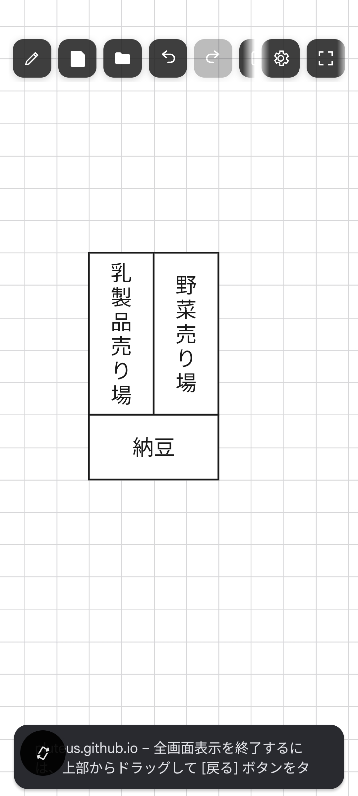

売り場をひとつずつ四角で並べていくだけの、ブラウザで動く店内レイアウト帳です。 インストール不要でそのまま開いて描き始められ、オフラインでも使えます。

店内マップエディタは、キャンバスの上に四角を並べて売り場を配置していく、 ブラウザで動くマップエディタです。棚のレイアウト替えの下書きや、 スタッフに共有するための簡単な店内図づくりに使えます。 特別なソフトのインストールは必要なく、ブラウザで開けばすぐに描き始められます。
売り場を置いて、名前を書いて、向きを整えるまで。
キャンバスをスワイプするだけで四角が生まれます。角はグリッドにぴったり揃うので、隙間なく並べられます。
四角をダブルタップして文字を入力するだけ。縦長の四角には縦書き、横長の四角には横書きで、大きさに合わせて読みやすいサイズに調整されます。
四角の上で長押し(PCでは右クリック)すると、回転や重なり順を変えるメニューが出ます。複数まとめて選んで、一度に回転させることもできます。
ハンドモードで2本指をひねると、キャンバス全体を90度ずつ回転させて見た目を変えられます。
完成したマップは画像(PNG)として保存したり、データ(JSON)として保存・読み込みしたりできます。
ホーム画面に追加すればアプリのように起動できます。通信がなくても編集を続けられ、前回の内容は自動で復元されます。
新しいバージョンが公開されると、更新するかどうかを尋ねるダイアログが表示されます。
最初にマップをひとつ作るまでの流れ。
ペンシルモードでキャンバスをスワイプし、四角を作る
四角をダブルタップして、売り場の名前を入力する
長押し(PCは右クリック)で、向きや重なり順を整える
設定パネルでグリッドの間隔を好みに調整する
保存メニューからPNG画像、またはJSONデータとして書き出す